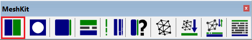

Finite Volume Method Use
Requirements
Download and install Anaconda or download and install any preferred Python software IDE;
Clone/Fork this repository to a folder of your preference;
Open the Main files through the preferred IDE and test the software;
Download and install SketchUp from SketchUp website or use the free web-based platform;
Download and install g-mesh from G-mesh website;
Install the MeshKit extension of SketchUp from the extension warehouse;
Download and install sounddevice Python library sounddevise
Download and install soundfile Python library soundfile
Libraries
To properly run the software, the following libraries are needed:
Python version 3.10.9 or above
Libraries for python:
math
matplotlib
numpy
scipy
sys
drawnow
time
gmsh
sounddevice
soundfile
Python running files
Currently, in the repository there are a lot of python files. This is because the software is still in development. Currently the updated files for users to run the software are:
CreateMeshFVM.py: to create the volumetric mesh using Gmsh software;
FVM.py: to run the room (as .msh file) and calculate the acoustics parameters in the room.
Algorithm
The software is organised in three sections:
Input variables: The inputs regarding the room dimensions, frequencies to consider, source and receiver positions along with others are to be inserted for the specific room in question.
Initialization and creation of mesh
Calculation loop: The “for loop” would loop over the frequencies and the time to calculate the energy density at each tetrahedron and at each time step.
Results and Post-processing Results are included in this section together with graphs for the analysis.
Inputs
Geometry
The geometry for this method is defined within SketchUp. In order to create a volumetric mesh of the room, the following steps need to be follow in SketchUp:
Create the 3D geometry of the room to simulate in SketchUp, setting the units of the geometry in meters;
In the MeshKit extension banner in SketchUp software, set the active mesher to gmsh by clicking on the “edit configuration button”
Include the Gmsh Path of the gmsh.exe and select gmsh as the active mesher;
Group the overal geometry (surfaces and edges) bounding the internal air volume by selecting everything, right-clicking and clicking “Make Group”;
Select the Group and click “Set selected as an smesh region and define properties”  in MeshKit;
In the “Region Options: gmsh” menu, keep all the default option but change only the name of the region by writing, for example, “RoomVolume” and click “ok”;
Open the group by double clicking on the object;
Select one or multiple surfaces you want to assign a boundary property;
Click “Add tetgen boundary to selected” in MeshKit;
Under “Refine”, change the refinement to 1;
Under “Name”: change the name to “materialname” e.g.”carpet” and click “ok”;
After finishing defining all the boundaries, select the group and click “export to generate mesh” in MeshKit;
Select Format = “gmsh” en Units = “m” and click “ok”;
Keep the default options apart from “pointSizes” which should change to True, click “ok” and save the .geo file with the name of your choice;
The .geo file needs to be saved in the same folder as the “CreateMeshFVM.py” file and the “FVM.py” file.
The gmsh.exe file needs also to be positioned in the same folder.
Mesh creation
The volumetric mesh is to be created. The file “CreateMeshFVM.py” allows to create the volumetric mesh using Gmsh software. The only parameters that need to be set in this file are:
the name of the names of the geo file you want to simulate (e.g. “3x3x3.geo”);
the name of the mesh file you want this python file to generate (e.g. “3x3x3.msh”); and
the length_of_mesh. The mesh length value describes the size of the spatial resolution of the mesh in the space and is vital to discretize correctly the space and achieve precise and converged results. Through various trials, it has been established that a mesh length of 1 m is generally adequate. However, for computations involving complex geometries or small rooms, a smaller length of mesh (0.5 m or lower) is recommended. The mesh length choice is contingent upon user preferences for details in parameters values, room dimensions but mostly dependent on the mean free path of the room. Infact, the length of mesh would need to be of the order of one mean free path of the room (equal or smaller than the mean free path of the room).
The method is suitable for any type of geometry.
Sound source
The sound sources for this method are defined within the “”FVM.py” python script. The model allows for the insertion of only one source position per calculation. The sound source is defined as an omnidirectional source. The users can input the sound power of the source $W_s$ in Watts and its position in the room in the following variables $x_{source},y_{source},z_{source}$ in m in the x,y,z directions.
Receiver
The receivers for this method are defined within the “”FVM.py” python script. The model allows for the insertion of only one acoustics receiver position per calculation. These are defined as point omnidirectional receivers. The users will input the position of the receiver in the room in the following variables $x_{rec},y_{rec},z_{rec}$ in m in the x,y,z directions.
Type of calculation
The type of calculation for this method is defined within the “”FVM.py” python script. The source can be defined as an interrupted noise source or an impulse source.
If an interrupted noise source is chosen, then the time within which the source stays on before getting switch off needs to be defined. The variable is $sourceon_{time}$. The time is defined in seconds and it will need to be long enough for the room to be filled with sound before switching it off. The source on time needs to be inputted as the 2/3 of the theoretical calculated Sabine reverberation time of the room. In this case, there is the option to toggle the sound source on and off or keep it stationary. This can be done by changing the variable “tcalc” from “decay” to “stationarysource”.
If an impulse source is chosen, the source will be automatically defined.
Frequency range
The frequency range for this method is defined within the “”FVM.py” python script. The frequency resolution should be included as inputs variables $fc_low$ and $fc_high$; these should be the middle frequency of a band. The maximum number of frequencies is 5 in octave bands. Normally, $fc_low$ is set to 125Hz and $fc_high$ is set to 2000Hz.
Discretization variables
Spatial discretization
The Finite Volume method works with a spatial volumetric discretization. This is defined in the mesh length variable of the “CreateMeshFVM.py” file. Appropriate mesh length needs to be chosen depending on the use as described above.
Time discretization dt
The time discretization for this method is defined within the “”FVM.py” python script. The time discretization will need to be chosen appropriately. According the Navarro 2012, to get good converged results, the time discretization dt will need to be defined depending on the length of mesh chosen. To make sure that the predictions converge to a fixed value with a very low error, the following empirical criterion will need to apply.
where dv is the mesh length chosen. The time discretization is defined in seconds.
Air absorption
The air absorption for this method is defined within the “”FVM.py” python script. The absorption of air will need to be entered. The air absorption is defined as $m_{atm}$ and in 1/meters and it is only one value for all the frequency bands.
Fixed inputs
Within the fixed inputs, there are:
Adiabatic speed of sound defined as 343 m/s;
Source power defined as 0.01 W (100dB);
Absorption conditions term (Option 1 Sabine, Option 2 Eyring, Option 3 Modified). These are absorption factors for the boundary conditions. Currently, the most accurate absorption factor is set as the Option 3 Modified as it has been demostrated that this is accurate for low and high absorption coefficients;
Reference pressure defined as 2 * (10^(-5)) Pa;
Air density at 20°C defined as 1.21 kg.m^-3.
Mesh file
The mesh file will need to be entered in the main “FVM.py” file in the variable “file_name”. This will give the input for the calculation to run a specific room (as a .msh file).
Surface materials
The surface materials names are defined in the SketchUp file as mentioned above.
Each surface (includeing doors, windows etc…) would require frequency dependent absorption coefficients. During the calculation (quite soon after pressing “Run”), the python script will prompt you with a question regarding the absorption coefficients of the surface of the room. It is important to include the absorption coefficient per each frequency (maximum 5 frequencies) separated by commas as per this example:
“Enter absorption coefficient for frequency {fc_low} to {fc_high} for carpet:0.15,0.17,0.20,0.25,0.25”.
Acoustics Calculation
The acoustic calculation is based on the Finite Volume method (FVM) solving the diffusion equation (Munoz, 2019). More information regarding the Finite Volume Method in the paragraph below.
Acoustics parameters
The diffusion equation method predicts the time-dependent and spatial-dependent propagation of the sound energy density w(r, t) in the evaluated frequency bands.
Sound Density Level
The sound density level can be expressed as function of sound energy density w(r, t) as:
Sound Pressure Level
After predicting the time-dependent sound energy density in the room, the sound pressure level decay curve can be expressed as function of sound energy density w(r, t) as:
where p_{ref} is 2 × 10−5 Pa and ρ is the air density.
Reverberation time and Early Decay Time (EDT)
From the sound pressure level decay curve, the Reverberation time can be estimated. The RT is defined by the time that it takes for the sound pressure level to decay of 60 dB. Depending on the room geometry, occasionally it is difficult to evaluate 60 dB of decay and therefore, the T30 is evaluated. This is obtained from the slope between -5 and -35 dB of the maximum starting level.
The Early Decay time is defined by the time that it takes for the sound pressure level to decay of 10 dB and it is calculated in a similar way. This is obtained from the slope between 0 and -10 dB of the maximum starting level.
Clarity, Definition and Centre Time
The Clarity (C80) parameter is the early to late arriving sound energy ratio. Clarity refers to how clear the sound quality is and it is calculated from the impulse response with the following relation: C_80=10 log〖(∫_0^80ms〖p^2 (t)〗 dt)/(∫_80ms^∞〖p^2 (t)〗 dt)〗 [dB]
The Definition (D50) parameter is the ratio of the early received sound energy (0-50ms after direct sound arrival) to the total received energy. It referres only to the speech and it is defined as:
D_50=10 log〖(∫_0^50ms〖p^2 (t) dt〗)/(∫_50ms^∞〖p^2 (t) 〗 dt)〗 [%]
The Center Time (Ts) parameter is the center of gravity of the squared impulse response. Center Time avoids the discrete division of the impulse response into early and late periods.
T_s=10 log〖(∫_0^∞〖τ∙p^2 (t) dt〗)/(∫_0^∞〖p^2 (t) 〗 dt)〗 [s] A low value indicate that most of the energy arrives early, a high value reveals that there is much reverberance.
The values for all these parameters are calculated from the Barron’s revisited theory formulas (Vorlander, 2008) with the influence of the direct field neglected.
References
R. P. Muñoz, “Numerical modeling for urban sound propagation: developments in wave-based and energy based methods,” PhD Thesis, Technische Universiteit Eindhoven, 2019.
J. M. Navarro, J. Escolano and J. J. Lopez, Implementation and evaluation of a diffusion equa-tion model based on finite difference schemes for sound field prediction in rooms,Appl. Acoust.73(2012) 659–665.
Vorländer M. Auralization: fundamentals of acoustics, modelling, simulation,algorithms and acoustic virtual reality. Springer 2008